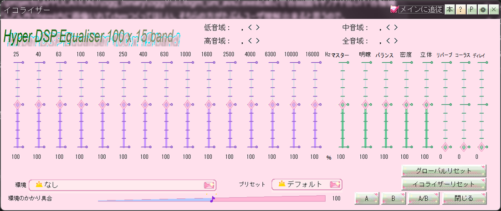

Nearly every window carries a small ? button. Press it and you get an operation guide drawn for that screen. It is often clearer than words alone, which makes it the best first move whenever you wonder what a control does.

Book (offline help) and ? buttons on the caption bar
Besides a minimap of the window, the guides illustrate the parts that are hardest to describe in words.
When you cannot place where a newly added feature fits, opening the operation guide is the quickest way in. Reading the matching page here afterwards fills in the rest.